Recruitments
Recruitments simplifies your hiring process by giving you the provision to initialize a requisition, manage candidate CVs, interviews and shortlist/select candidates. Below is the recruitment process flowchart.
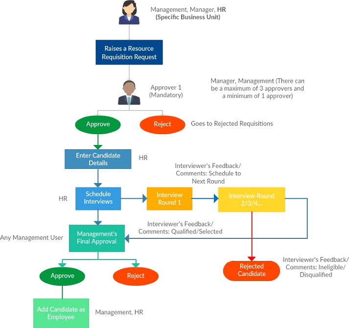
Description:
- A User (Management/Manager/HR) raises a requisition request. According to the number of approvers selected (Min: 1 Max: 3), the approvers (Management, Manager) have to approve/reject the requisition request. A requisition can be rejected at any level
- After the requisition request has been approved, the HR can enter the details (CV) of the candidate
- The HR will then schedule an interview
- The interview takes place offline
- The interviewer (Management/Manager/HR/Employee) provides the feedback about the candidate
- The Management has to give their final consent, they can either approve/reject
- Once the Management approves, the HR can add the candidate to the application
How do I create a Job Requisition/Opening?
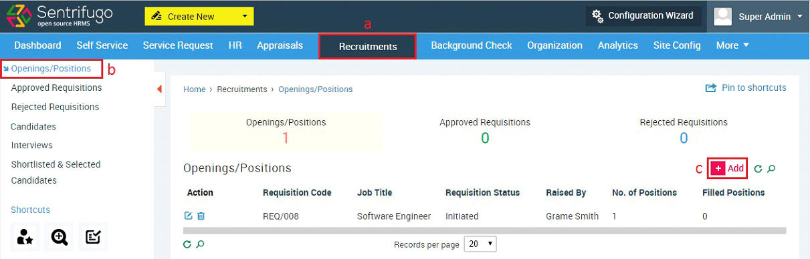
- Click Recruitments in the top menu
- Click Openings/Positions on the left menu panel
- Click +Add button on the right side
- Requisition ID will be generated automatically
- Enter the required details
- Select the approver(s)
- Click SAVE button
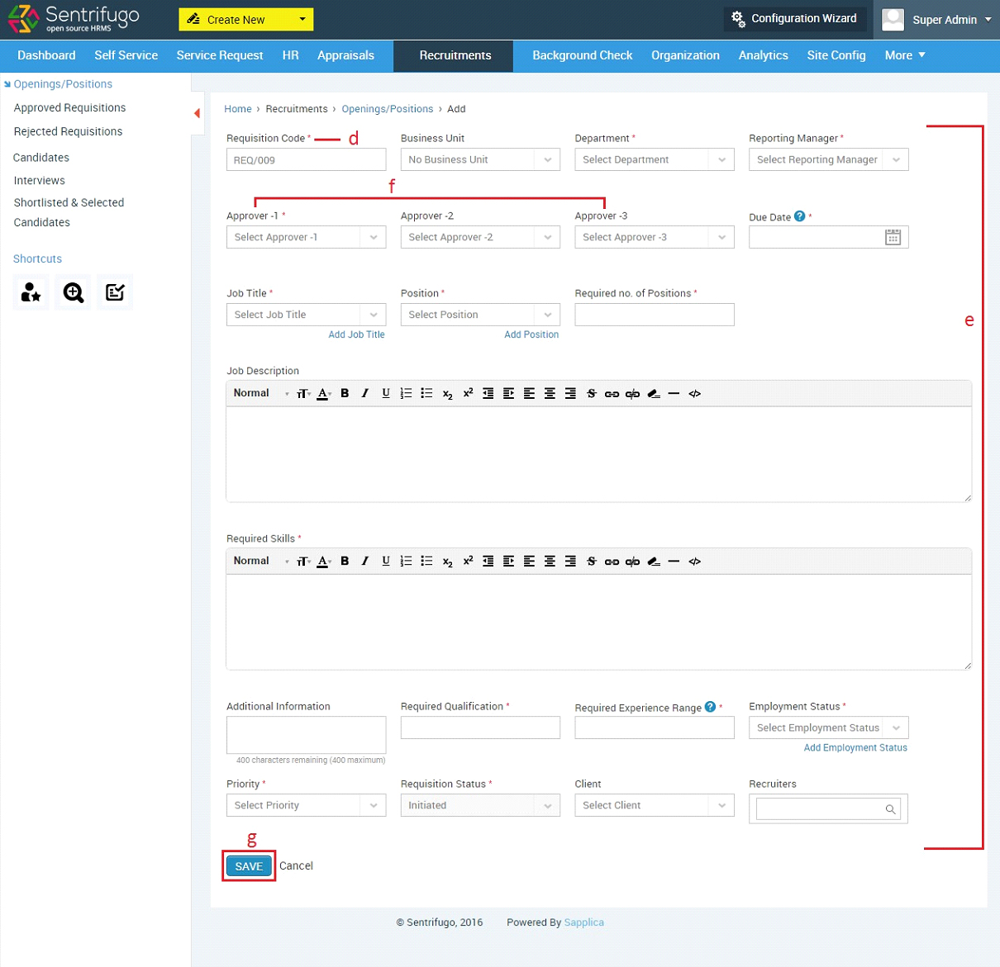
How do I Approve/Reject a Requisition/Opening?
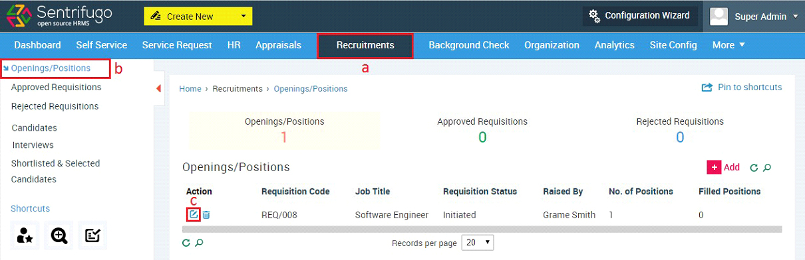
- Click Recruitments in the top menu
- Click Openings/Positions on the left menu panel
- Click Edit icon in the action column
- Select an action (Approve/Reject) in the field requisition status
- Click UPDATE button
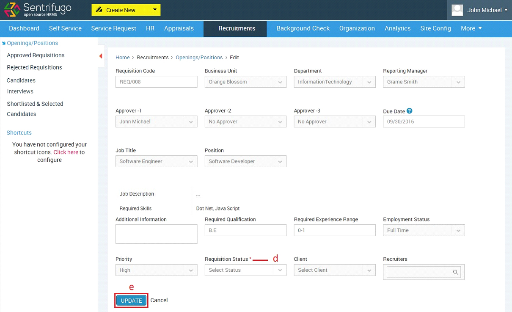
How do I enter a Candidate’s details?
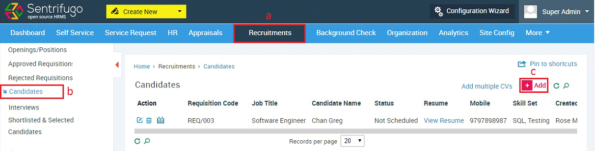
- Click Recruitments in the top menu
- Click Candidates on the left side panel
- Click +Add button on the right side
- Select the Requisition ID
- Enter Candidate’s name f1. Click to upload resume
- f2. Click here to enter candidate details in a form
- Click SAVE button
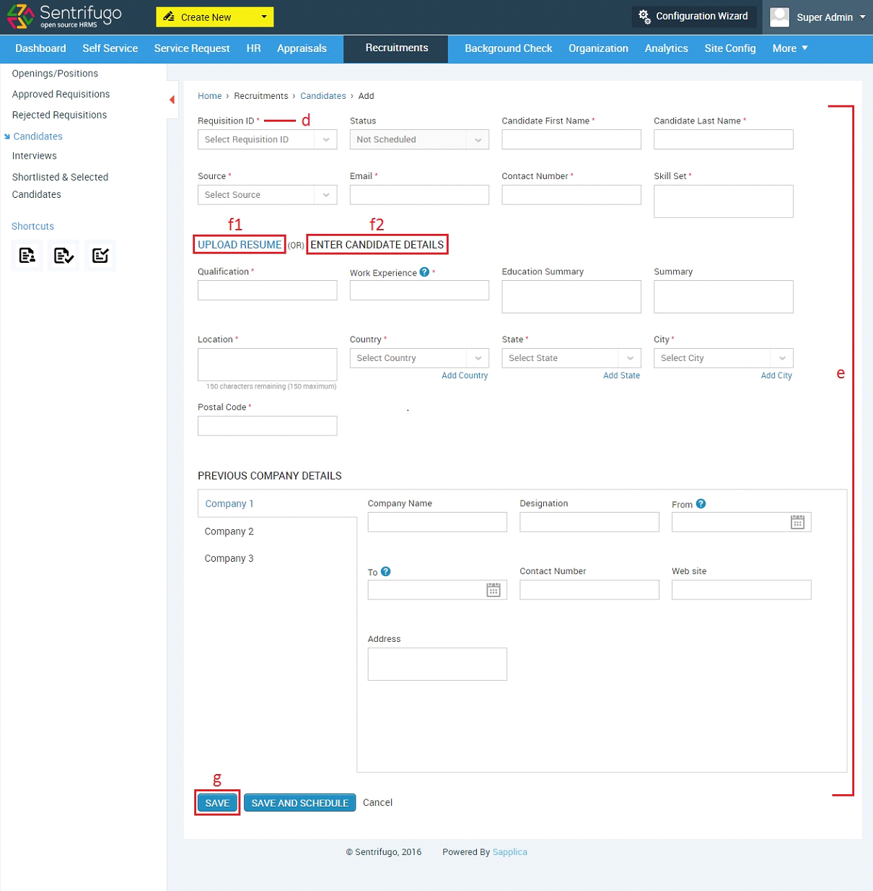
or
How do I Schedule an Interview?

- Click Recruitments in the top menu
- Click Interviews on the left menu panel
- Click +Add button on the right side
- Select the Requisition ID
- Add candidate details if they aren’t added
- Enter the required details
- Click SAVE button
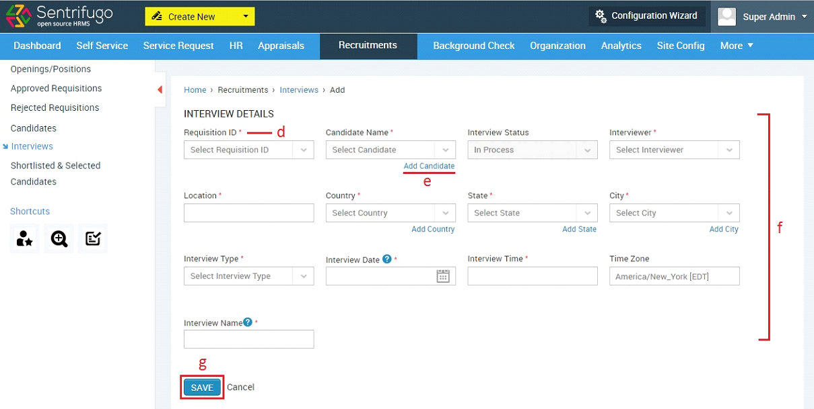
The interviewer and candidate will receive email notifications informing them about the interview.
How do I provide Feedback for an Interview?
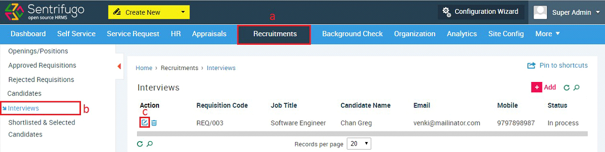
- Click Recruitments menu option
- Click Interviews on the left side panel
- Click Edit icon against an interview
- Click Edit icon against an interview round
- Provide feedback, comments and select the round status
- Click UPDATE button
- Click +Add to add another interview round (Provided you have given ‘Schedule for next round’ as round status)
- Provide the interview and candidate status
- Click UPDATE button
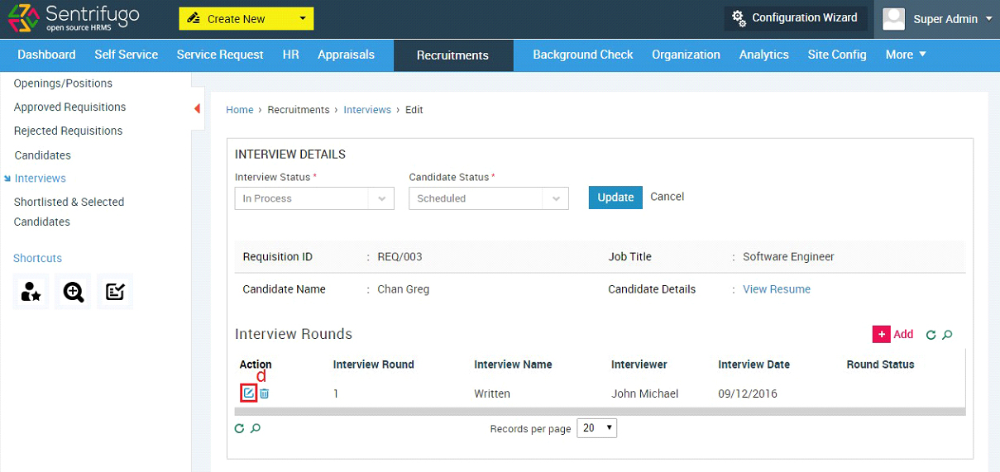
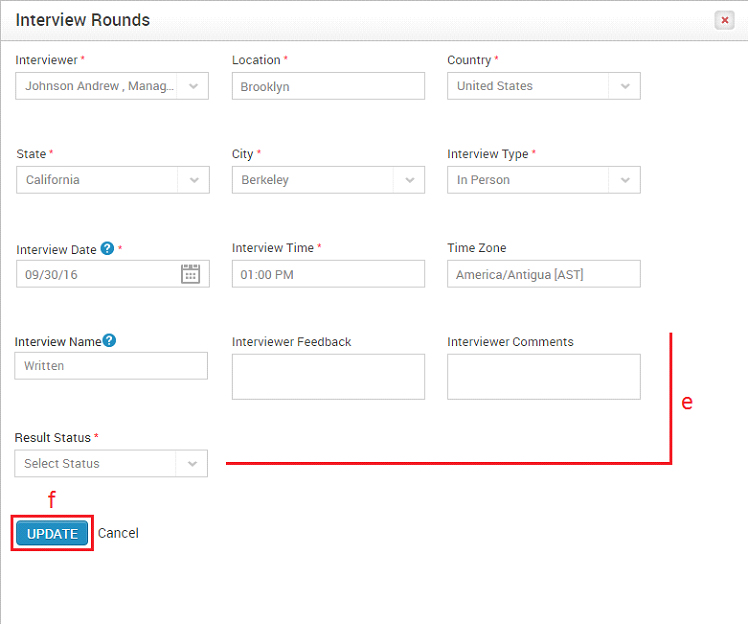
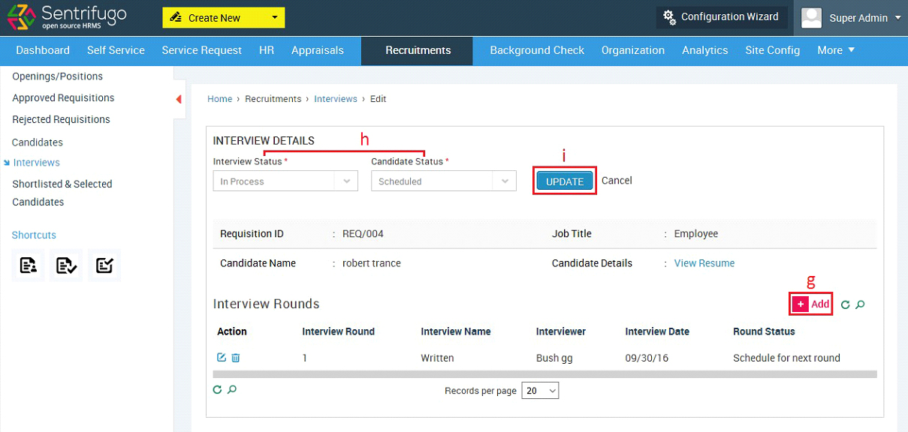
How do I select/reject a Shortlisted Candidate? (Management’s Final Approval)
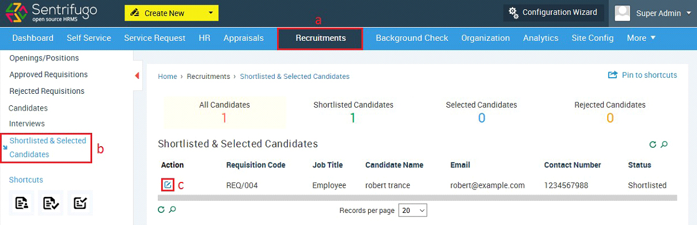
- Click Recruitments in the top menu
- Click Shortlisted & Selected Candidates on the left menu panel
- Click Edit icon against a requisition code
- Select the status (select/reject)
- Click UPDATE button
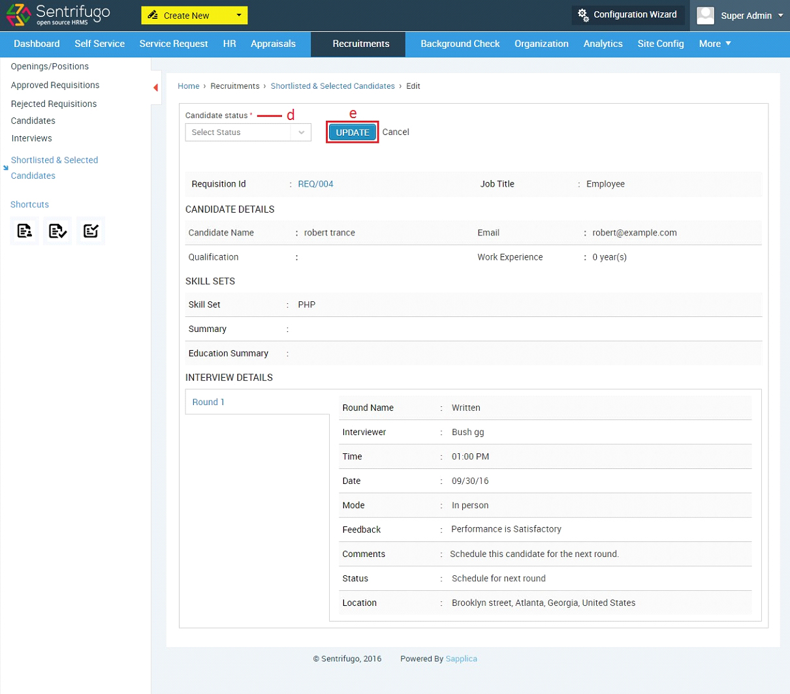
How do I add a Candidate as an Employee?
- Click HR in the top menu
- Click+Add button on the right side
- Select Interview in the field Mode of Employment
- The shortlisted candidates’ names will be populated here, select a candidate from the drop down list
- Enter all the required details
- Click SAVE button
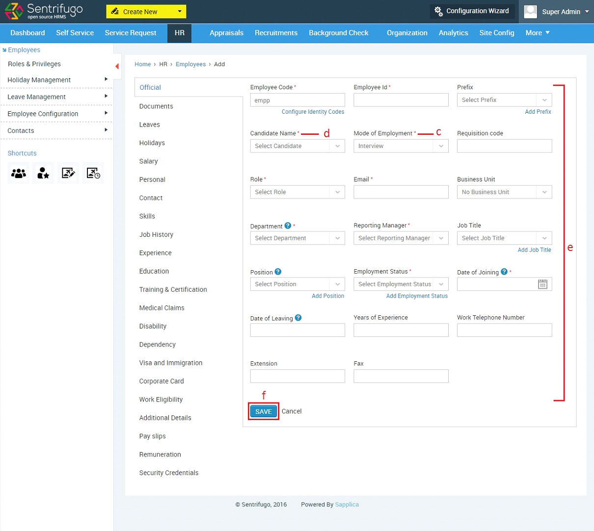
An activity log will be displayed for every action performed by user(s) involved in a Recruitment Cycle. This will provide users more clarity about the status of the process.
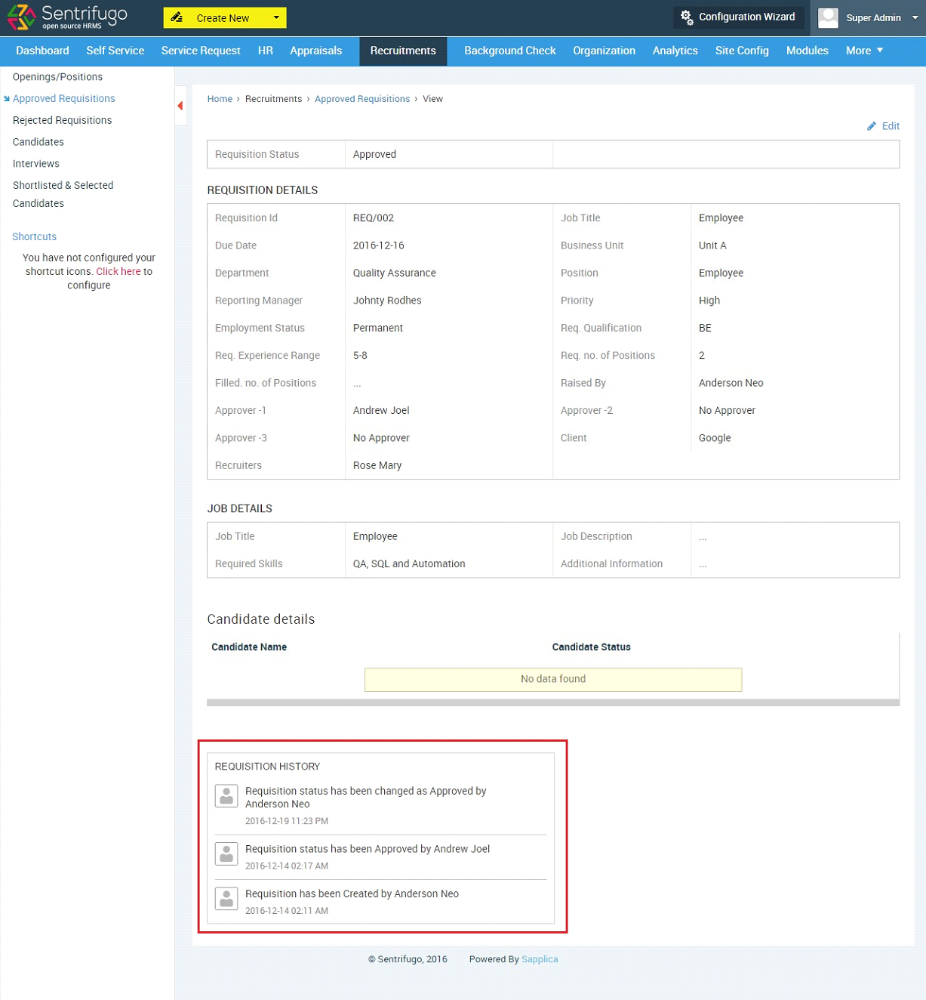